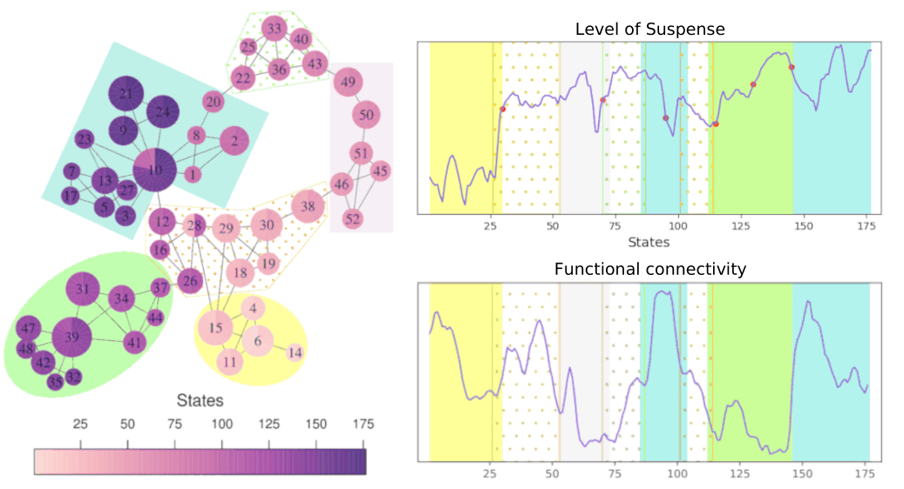
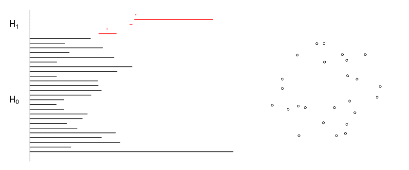

Research
For a comprehensive list of my papers click here .
Generalizing the interleaving distance using categorical flows
Interleaving distance is a measure of similarity between persistence modules and it's been a central concept in algebraic topology and topological data analysis. Through a guiding example, this video introduces categorical flows—a functorial operation that extends the interleaving distance into a measure between objects of virtually any category. This video is part of the tutorial-a-thon 2025 Spring by the Applied Algebraic Topology Research Network (AATRN)
Revealing brain network dynamics during the emotional state of suspense using topological data analysis

Joint with doctors Francisco Gomez and Jose Perea we applied a tool from Topological Data Analysis (TDA) Mapper , to find the relation of brain dynamics and suspense. As result, we found changes in the functional connectivity within and between large-scale networks associated with the level of suspense.
If you want to know more, check the full article or see all the details in my master's thesis .
Persistent Homology for clusterization of RNA secondary structures
As part of my bachelor's thesis I worked with Professors Gustavo Rubiano and Clara Bermudez applying persistent homology to cluster RNA secondary structures. We interpreted the 0-homology classes (connected-components) as clusters, resulting a method comparable to hierarchical clustering.